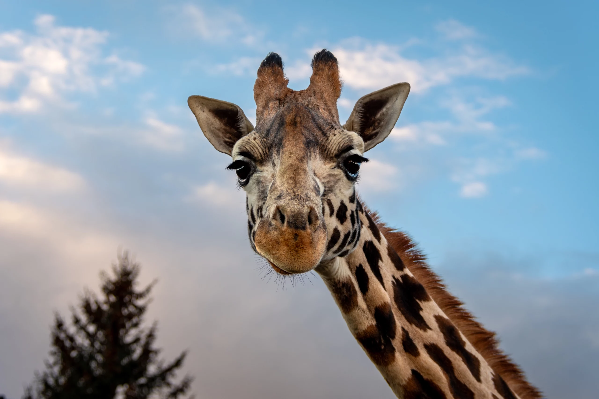

Species
Northern giraffes
The northern giraffe, also known as three-horned giraffe, is a type of giraffe native to North Africa. They are often mistaken with the Southern Giraffes, but Northern giraffes can be differentiated by the shape and size of the two distinctive horn-like protuberances known as ossicones on their foreheads

Southern giraffe
Southern giraffes have rounded or blotched spots, some with star-like extensions on a light tan background, running down to the hooves. They range from South Africa, Angola, Namibia, Botswana, Zambia, Zimbabwe, Mozambique. Southern giraffe is most common species of giraffe. Their approximate population is composed of 44,500 to 50,000 individuals.

Okapi
Although Okapi is not technically a type of giraffe species and they look more like a cross between a deer and a zebra, they are known as "forest giraffe". Moreover, they are the giraffe’s only living relative They are native to the Ituri Rainforest in the Democratic Republic of Congo. Some characteristics of them are. Okapis are well adapted to their dense, dark surroundings. Their distinctly large ears help them to sense hidden predators. Their dark bodies blend into the shadows and their striped hindquarters break up any outline, making it difficult for predators to spot them. Also, most okapis are very shy and non-aggressive. They feed on leaves, fruits, grasses and some species of fungi.